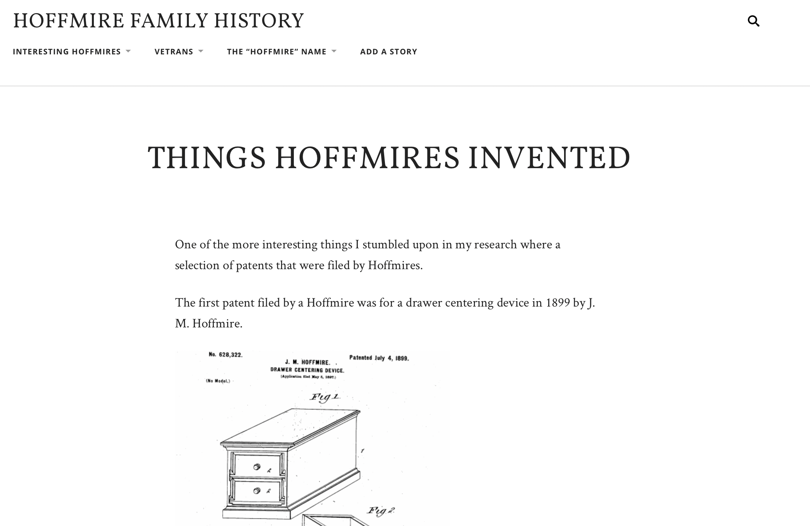
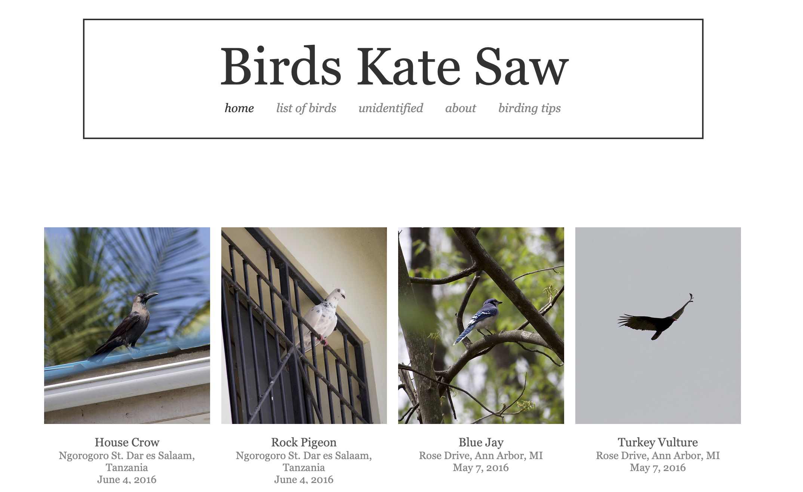

A few years ago I became really fascinated by my family history. Hoffmire with that specific spelling is a fairly rare last name, so I wanted to uncover what I could about my family history to learn how the last name came to be, who was in my family tree, and where did the Hoffmires come from. This is the project that resulted from some of my research:

For years now I have been a birder and intrigued by birds where I live and where I travel. This started after a summer spent in East Africa when I would sit and work in a backyard garden that had endless bird visitors all of whom were foreign to me. Since then I have documented many of my bird sightings and compiled a website of some of them found here:
